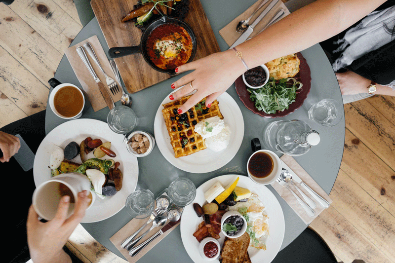

יום המשפחה הוא יום בו אני מחפשת מתכון קליל שמתאים לכל בני המשפחה וכך אנו יוצקרים חוויה משפחתית שבה כולנו שמחים ומרוצים .אחד המתכונים שהשתמשתי בו השנה הוא מתכון זה.
מרבבים יחד את כל הרכיבים ומוזגים לטוסטר וופל בלגי חצי כוס בלילה מחכים 2 דקות והמנה מוכנה !!! כן כל אחד יכול לעשות בעצמו ולתרום את יכולתו.
